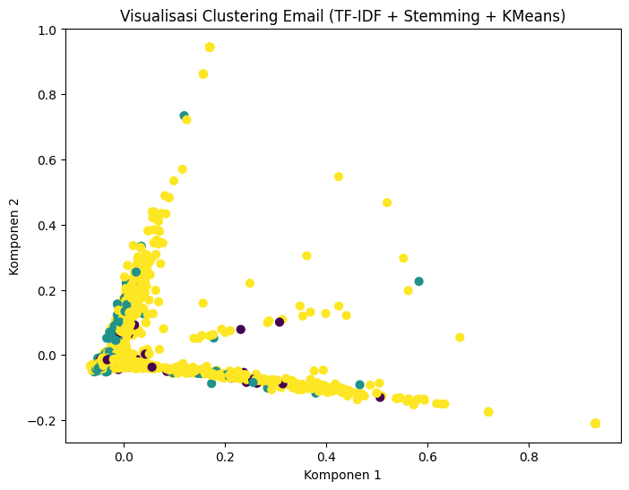
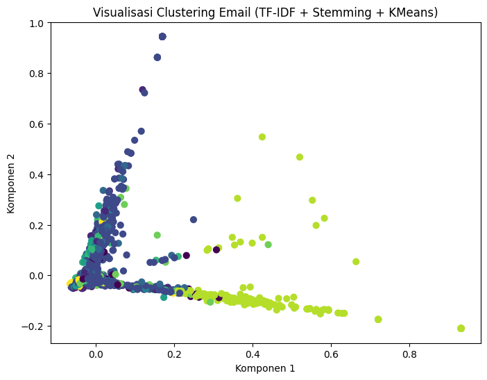

Clustering Data Email#
Load Data#
from google.colab import drive
drive.mount('/content/drive')
Mounted at /content/drive
file_path = '/content/drive/MyDrive/PPW/UTS/spam.csv'
import pandas as pd
import re
import nltk
from nltk.stem import PorterStemmer
from nltk.corpus import stopwords
from sklearn.feature_extraction.text import TfidfVectorizer
from sklearn.cluster import KMeans
from sklearn.decomposition import PCA
import matplotlib.pyplot as plt
# Baca file CSV
data = pd.read_csv(file_path, encoding='latin1')
data.head()
| id | Text | Unnamed: 2 | Unnamed: 3 | Unnamed: 4 | |
|---|---|---|---|---|---|
| 0 | 1 | Go until jurong point, crazy.. Available only ... | NaN | NaN | NaN |
| 1 | 2 | Ok lar... Joking wif u oni... | NaN | NaN | NaN |
| 2 | 3 | Free entry in 2 a wkly comp to win FA Cup fina... | NaN | NaN | NaN |
| 3 | 4 | U dun say so early hor... U c already then say... | NaN | NaN | NaN |
| 4 | 5 | Nah I don't think he goes to usf, he lives aro... | NaN | NaN | NaN |
# Ambil hanya kolom yang diperlukan
datanew = data[['id', 'Text']]
datanew
| id | Text | |
|---|---|---|
| 0 | 1 | Go until jurong point, crazy.. Available only ... |
| 1 | 2 | Ok lar... Joking wif u oni... |
| 2 | 3 | Free entry in 2 a wkly comp to win FA Cup fina... |
| 3 | 4 | U dun say so early hor... U c already then say... |
| 4 | 5 | Nah I don't think he goes to usf, he lives aro... |
| ... | ... | ... |
| 5567 | 5568 | This is the 2nd time we have tried 2 contact u... |
| 5568 | 5569 | Will Ì_ b going to esplanade fr home? |
| 5569 | 5570 | Pity, * was in mood for that. So...any other s... |
| 5570 | 5571 | The guy did some bitching but I acted like i'd... |
| 5571 | 5572 | Rofl. Its true to its name |
5572 rows × 2 columns
print("Jumlah data:", len(datanew))
Jumlah data: 5572
Preprocessing#
nltk.download('stopwords')
nltk.download('punkt')
nltk.download('punkt_tab')
[nltk_data] Downloading package stopwords to /root/nltk_data...
[nltk_data] Package stopwords is already up-to-date!
[nltk_data] Downloading package punkt to /root/nltk_data...
[nltk_data] Package punkt is already up-to-date!
[nltk_data] Downloading package punkt_tab to /root/nltk_data...
[nltk_data] Unzipping tokenizers/punkt_tab.zip.
True
stemmer = PorterStemmer()
stop_words = set(stopwords.words('english'))
def clean_and_stem(text):
text = str(text).lower() # ubah ke huruf kecil
text = re.sub(r'[^a-z\s]', '', text) # hapus karakter non-huruf
words = nltk.word_tokenize(text) # tokenisasi
words = [stemmer.stem(w) for w in words if w not in stop_words] # stemming + hapus stopwords
return ' '.join(words)
datanew['clean_text'] = datanew['Text'].apply(clean_and_stem)
datanew.head()
/tmp/ipython-input-2589953224.py:11: SettingWithCopyWarning:
A value is trying to be set on a copy of a slice from a DataFrame.
Try using .loc[row_indexer,col_indexer] = value instead
See the caveats in the documentation: https://pandas.pydata.org/pandas-docs/stable/user_guide/indexing.html#returning-a-view-versus-a-copy
datanew['clean_text'] = datanew['Text'].apply(clean_and_stem)
| id | Text | clean_text | |
|---|---|---|---|
| 0 | 1 | Go until jurong point, crazy.. Available only ... | go jurong point crazi avail bugi n great world... |
| 1 | 2 | Ok lar... Joking wif u oni... | ok lar joke wif u oni |
| 2 | 3 | Free entry in 2 a wkly comp to win FA Cup fina... | free entri wkli comp win fa cup final tkt st m... |
| 3 | 4 | U dun say so early hor... U c already then say... | u dun say earli hor u c alreadi say |
| 4 | 5 | Nah I don't think he goes to usf, he lives aro... | nah dont think goe usf live around though |
TF-IDF dan K-means =3#
from sklearn.feature_extraction.text import TfidfVectorizer
from sklearn.cluster import KMeans
# TF-IDF
vectorizer = TfidfVectorizer(stop_words='english')
X = vectorizer.fit_transform(datanew['clean_text'])
# KMeans (contoh: 3 cluster)
kmeans = KMeans(n_clusters=3, random_state=42)
datanew['cluster'] = kmeans.fit_predict(X)
/tmp/ipython-input-1420405379.py:10: SettingWithCopyWarning:
A value is trying to be set on a copy of a slice from a DataFrame.
Try using .loc[row_indexer,col_indexer] = value instead
See the caveats in the documentation: https://pandas.pydata.org/pandas-docs/stable/user_guide/indexing.html#returning-a-view-versus-a-copy
datanew['cluster'] = kmeans.fit_predict(X)
Hasil#
for i in range(3):
print(f"\n=== Cluster {i} ===")
print(datanew[datanew['cluster'] == i]['Text'].head(5).to_string(index=False))
=== Cluster 0 ===
FreeMsg Hey there darling it's been 3 week's no...
Even my brother is not like to speak with me. T...
Ahhh. Work. I vaguely remember that! What does ...
Yeah he got in at 2 and was v apologetic. n had...
Great! I hope you like your man well endowed. I...
=== Cluster 1 ===
I'm back & we're packing the car now, I'll ...
Oops, I'll let you know when my roommate's done
Do you know what Mallika Sherawat did yesterday...
Ha ha ha good joke. Girls are situation seekers.
Does not operate after <#> or what
=== Cluster 2 ===
Go until jurong point, crazy.. Available only i...
Ok lar... Joking wif u oni...
Free entry in 2 a wkly comp to win FA Cup final...
U dun say so early hor... U c already then say...
Nah I don't think he goes to usf, he lives arou...
Visualisasi Hasil Clustering (PCA 2D)#
pca = PCA(n_components=2, random_state=42)
reduced_X = pca.fit_transform(X.toarray())
plt.figure(figsize=(8,6))
plt.scatter(reduced_X[:,0], reduced_X[:,1], c=datanew['cluster'], cmap='viridis', s=40)
plt.title('Visualisasi Clustering Email (TF-IDF + Stemming + KMeans)')
plt.xlabel('Komponen 1')
plt.ylabel('Komponen 2')
plt.show()

TF-IDF dan K-means =10#
from sklearn.feature_extraction.text import TfidfVectorizer
from sklearn.cluster import KMeans
# TF-IDF
vectorizer = TfidfVectorizer(stop_words='english')
X = vectorizer.fit_transform(datanew['clean_text'])
# KMeans (contoh: 10 cluster)
kmeans = KMeans(n_clusters=10, random_state=42)
datanew['cluster'] = kmeans.fit_predict(X)
/tmp/ipython-input-1822394370.py:10: SettingWithCopyWarning:
A value is trying to be set on a copy of a slice from a DataFrame.
Try using .loc[row_indexer,col_indexer] = value instead
See the caveats in the documentation: https://pandas.pydata.org/pandas-docs/stable/user_guide/indexing.html#returning-a-view-versus-a-copy
datanew['cluster'] = kmeans.fit_predict(X)
Hasil#
for i in range(10):
print(f"\n=== Cluster {i} ===")
print(datanew[datanew['cluster'] == i]['Text'].head(5).to_string(index=False))
=== Cluster 0 ===
FreeMsg Hey there darling it's been 3 week's no...
Even my brother is not like to speak with me. T...
Ahhh. Work. I vaguely remember that! What does ...
Yeah he got in at 2 and was v apologetic. n had...
Great! I hope you like your man well endowed. I...
=== Cluster 1 ===
A gram usually runs like <#> , a half ei...
Does not operate after <#> or what
Good stuff, will do.
Turns out my friends are staying for the whole ...
Found it, ENC <#> , where you at?
=== Cluster 2 ===
Go until jurong point, crazy.. Available only i...
U dun say so early hor... U c already then say...
As per your request 'Melle Melle (Oru Minnaminu...
WINNER!! As a valued network customer you have ...
SIX chances to win CASH! From 100 to 20,000 pou...
=== Cluster 3 ===
I'm gonna be home soon and i don't want to talk...
IÛ÷m going to try for 2 months ha ha only joking
Just forced myself to eat a slice. I'm really n...
I'm back & we're packing the car now, I'll ...
Hello! How's you and how did saturday go? I was...
=== Cluster 4 ===
I've been searching for the right words to than...
Thanks for your subscription to Ringtone UK you...
Thanks a lot for your wishes on my birthday. Th...
U 447801259231 have a secret admirer who is loo...
Thanks for your Ringtone Order, Reference T91. ...
=== Cluster 5 ===
Did you catch the bus ? Are you frying an egg ?...
Did I forget to tell you ? I want you , I need ...
Smile in Pleasure Smile in Pain Smile when trou...
Umma my life and vava umma love you lot dear
Hello, my love. What are you doing? Did you get...
=== Cluster 6 ===
Nah I don't think he goes to usf, he lives arou...
Oops, I'll let you know when my roommate's done
U don't know how stubborn I am. I didn't even w...
Do you know what Mallika Sherawat did yesterday...
Congrats! 1 year special cinema pass for 2 is y...
=== Cluster 7 ===
Yup... Ok i go home look at the timings then i ...
What you thinked about me. First time you saw m...
Sorry to be a pain. Is it ok if we meet another...
ÌÏ predict wat time Ì_'ll finish buying?
HEY GIRL. HOW R U? HOPE U R WELL ME AN DEL R BA...
=== Cluster 8 ===
Ok lar... Joking wif u oni...
Sorry my roommates took forever, it ok if I com...
Ok i am on the way to home hi hi
Ok... Ur typical reply...
ok. I am a gentleman and will treat you with di...
=== Cluster 9 ===
Free entry in 2 a wkly comp to win FA Cup final...
Had your mobile 11 months or more? U R entitled...
URGENT! You have won a 1 week FREE membership i...
07732584351 - Rodger Burns - MSG = We tried to ...
I am waiting machan. Call me once you free.
Visualisasi Hasil Clustering (PCA 2D)#
pca = PCA(n_components=2, random_state=42)
reduced_X = pca.fit_transform(X.toarray())
plt.figure(figsize=(8,6))
plt.scatter(reduced_X[:,0], reduced_X[:,1], c=datanew['cluster'], cmap='viridis', s=40)
plt.title('Visualisasi Clustering Email (TF-IDF + Stemming + KMeans)')
plt.xlabel('Komponen 1')
plt.ylabel('Komponen 2')
plt.show()
